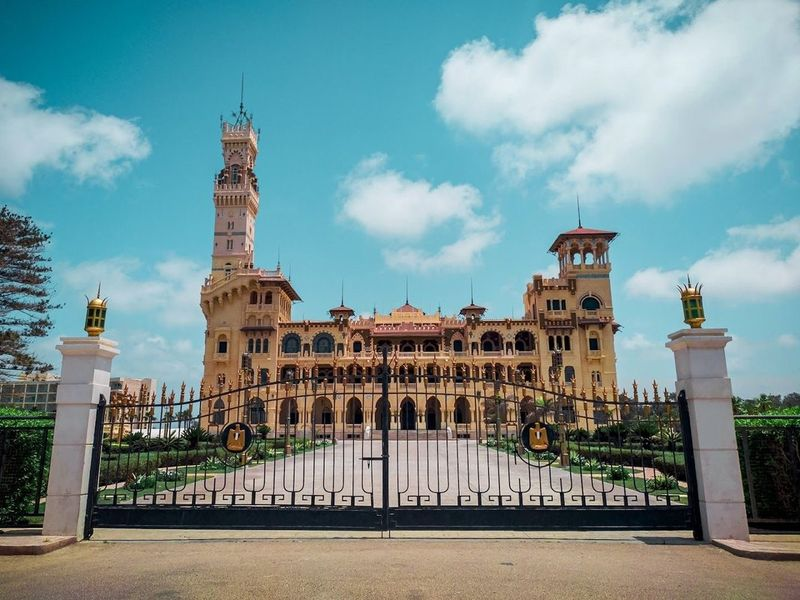
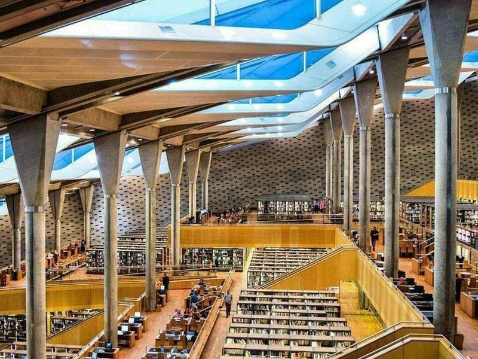
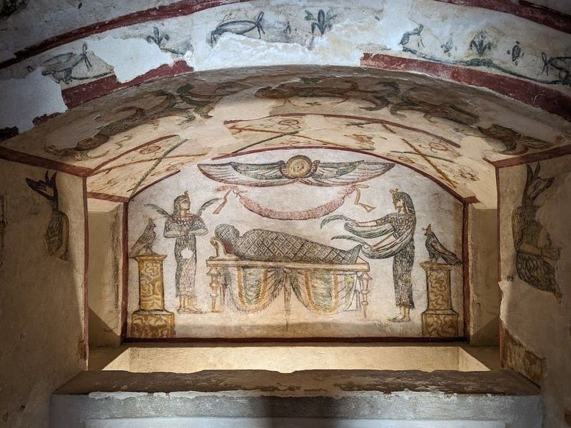
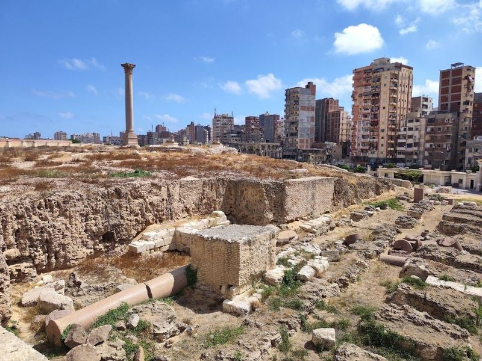
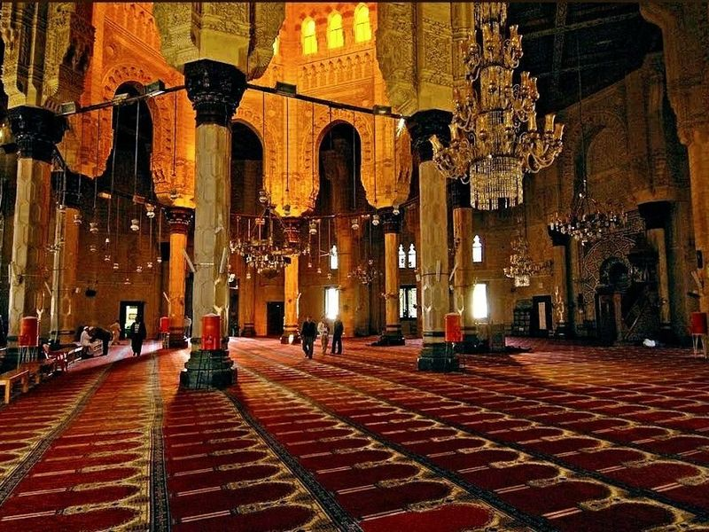
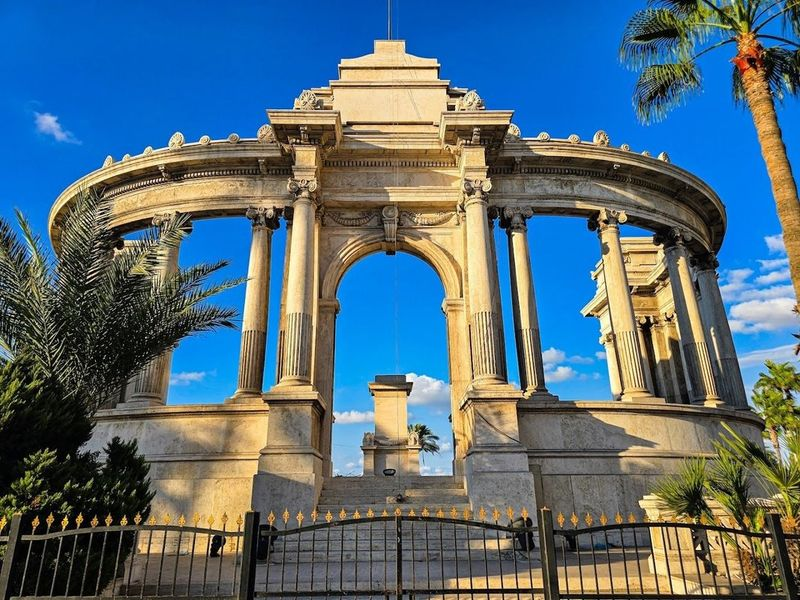
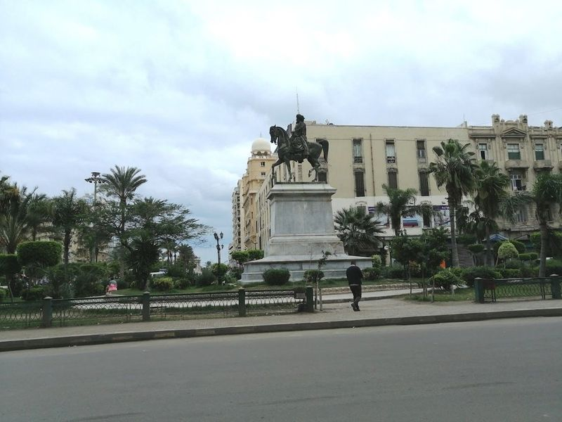
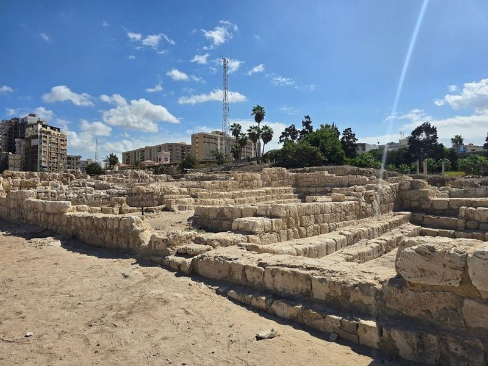
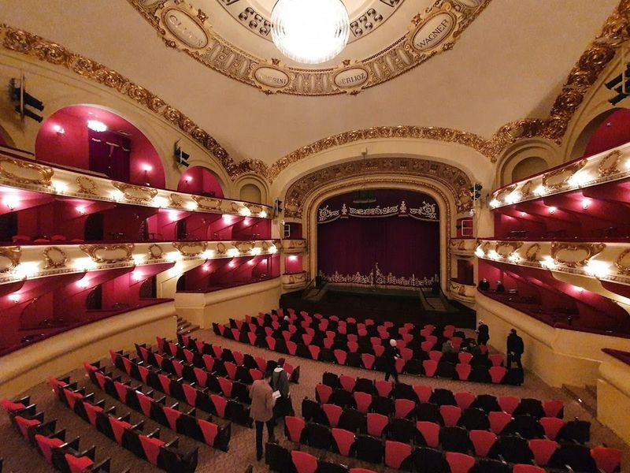
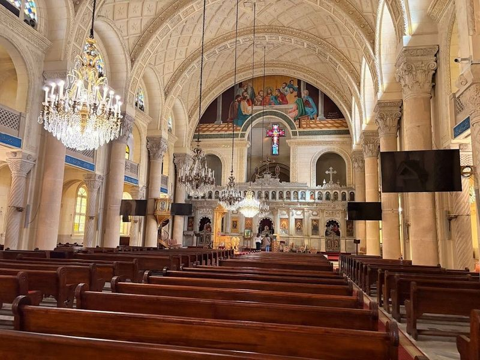

Explore Alexandria
A Brief History
Alexandria was founded by Alexander the Great in 331 BCE and later housed the Ptolemaic court, the Pharos lighthouse, and a celebrated library. Roman, Byzantine, and Islamic layers survive in catacombs, theatres, and fortifications along the Mediterranean. The modern corniche city still anchors Egypt's north coast trade and cultural life. Qaitbay Citadel and the modern library complex extend the city's role as Egypt's principal Mediterranean port.
Attractions Map
Top Sights & Activities

Montaza Palace
Montaza Palace, located in the historic city of Alexandria, Egypt, is a grand royal palace built in the 1930s. The palace features a blend of Turkish and Florentine architectural styles and is surrounded by expansive gardens that are now open to the public as a park. Originally the private residence of King Farouk and his family, Montaza Palace boasts lush gardens that are open to visitors on holidays and weekends throughout the year.

Alexandria Bibliotheca
The Alexandria Bibliotheca is a modernist library with a curving facade that houses an impressive collection of 8 million books. It was built in 2002 as a deliberate attempt to revive the brilliance of the original ancient library, which was one of the greatest classical institutions. The complex also features four museums, a planetarium, and six specialized libraries. This architectural marvel has become one of Egypt's major cultural venues and hosts international performers.

Catacombs of Kom el Shoqafa
The Catacombs of Kom el Shoqafa, located in the western necropolis of Alexandria, are an ancient burial site dating back to the 2nd century AD. This historical archaeological site consists of three levels carved into solid rock, with the third level now submerged underwater. The catacombs feature a blend of Roman, Greek, and Egyptian cultural influences, with statues and architectural elements reflecting this fusion.

Serapeum of Alexandria
The Serapeum of Alexandria, a renowned Roman-era site, once featured a red-granite column adorned with sphinxes. This archaeological marvel reflects the rich history of the Mediterranean region before Christ. Egyptians once revered it as a pilgrimage site, but with the arrival of Christianity, it was deemed idolatrous and largely destroyed. Despite this, remnants of its grandeur persisted through the centuries.

Sidi Morsi Abu al-Abbas Mosque, alexandria
Sidi Morsi Abu al-Abbas Mosque is a grand and ornate mosque located near downtown Alexandria. It features intricate architecture with multiple domes and buildings, showcasing Islamic design both inside and out. The mosque also houses the mausoleum of a 13th-century saint. While currently only open to men, there are plans to reopen it for women in the future.

Alexandria Naval Unknown Soldier Memorial
The Alexandria Naval Unknown Soldier Memorial is a place dedicated to honoring soldiers who lost their lives in war and whose identities remain unknown. It serves as a burial site for these unidentified soldiers. Located in downtown Alexandria, the memorial stands as a beautiful monument representing the sacrifice of these individuals for Egypt. The area surrounding the memorial is lively and crowded, making it an interesting spot to visit.

Mohamed Ali Pasha Statue
The Mohamed Ali Pasha Statue, created by renowned French sculptor Alfred Jacquemar, was commissioned to honor the legacy of Muhammad Ali Pasha. The statue was initially displayed in France before finding its permanent home at Consuls Square (now Mansheya) in December 1872. Despite being located in a historic part of Alexandria, the area around the statue is not well-maintained. However, visitors can still enjoy exploring the lively backstreets and take in interesting architecture on foot.

Alexandria Ancient Roman Theater
The Ancient Roman Theatre is a popular tourist attraction located in the town of Verona, Italy. Dating back to the 4th century AD, it was used not only for performances during the Roman era, but also during the Byzantine and early Islamic periods. The venue is home to several statues which were found underwater and later brought to light by archaeologists. Today, concerts are held there annually during the summertime.

Alexandria Opera House
The Alexandria Opera House is a cultural gem nestled in the heart of Alexandria, Egypt. This ornate theatre offers a variety of performances, from opera to ballet, providing visitors with an opportunity to immerse themselves in the city's arts scene. The well-maintained venue boasts exquisite wall and ceiling decor, creating an enchanting atmosphere for guests. With its friendly staff and old-fashioned service, the opera house promises a memorable experience for all attendees.

St. Mark's Cathedral in Alexandria
St. Mark's Cathedral in Alexandria is a richly adorned Coptic cathedral that is believed to occupy the site of St. Mark's original 1st-century church. The cathedral holds historical significance as it is associated with St. Mark, who preached in Alexandria during the mid-1st century CE, and was also a center for early Christian scholarship and resistance against Roman emperor worship.